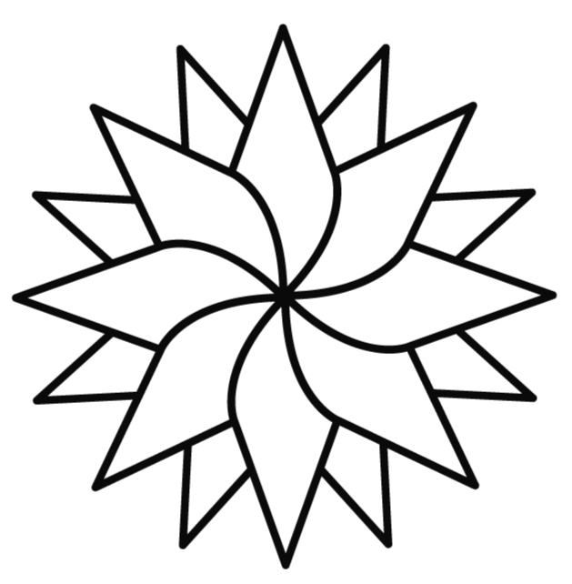
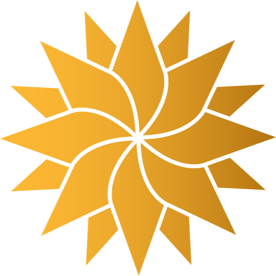

lunes 5 a viernes 9 de octubre
Semana completa de inmersión: cada pasante vive 2,5 días en Escola Virolai y 2,5 días en Escola Sadako.
2 escuelas·2,5 días cada una
Semana completa de inmersión: cada pasante vive 2,5 días en Escola Virolai y 2,5 días en Escola Sadako.
Libre. El lunes 12 es Fiesta Nacional de España y los colegios están cerrados: día libre en Barcelona o para conocer Europa.
Libre. El lunes 12 es Fiesta Nacional de España y los colegios están cerrados: día libre en Barcelona o para conocer Europa.
Una o dos escuelas por día.
Presentación del proyecto educativo y entrevista con la dirección.
Visita guiada, entrevistas con estudiantes y educadores.
Talleres con expertos en las temáticas centrales del movimiento de Nueva Educación, en las dependencias de las escuelas visitadas y/o en las oficinas del Instituto Relacional, barrio de Eixample, Barcelona.
Infantil, primaria, ESO y Bachillerato
Infantil, primaria y ESO
Día completo, fuera de Barcelona
Infantil, primaria y ESO
Incorporación de la naturaleza y el arte · Gobierno estudiantil · Trabajo de estudiantes internivel · Metaprendizaje
Infantil y primaria
Organización y espacios · Evaluación formativa, rúbricas y autoevaluación · Cajas de aprendizaje · Organización participativa de los alumnos
Infantil y primaria
Organización y espacios · Evaluación formativa, diarios de aprendizaje · Proyecto anual temático y cajas de aprendizaje · Trabajo por comunidades de alumnos
ESO
Organización y espacios · Evaluación formativa, portfolios · Autonomía del alumnado · Vinculación de la escuela con la comunidad
Día completo, fuera de Barcelona
Infantil, primaria y ESO
Trabajo interdisciplinario · Aprendizaje Basado en Proyectos · Autonomía del estudiante · Coherencia escolar · Codocencia
El orden de las visitas puede variar y está sujeto a la disponibilidad de las escuelas.
Directora del programa INSPIRA
Coordinadora INSPIRA
Director, Escola Sadako — anfitrión semana 1
Encargada de Innovación, Escola Virolai — anfitriona semana 1
Ex-director adjunto, Institut Angeleta Ferrer y Escola Nova 21; fundador del Institut Angeleta Ferrer
Director, Institut Escola Les Vinyes
Consultor en transformación pedagógica
Consultor en procesos de cambio, co-autor de «Educación Relacional»
Conocer los proyectos educativos de las principales escuelas de vanguardia en Cataluña y compartir la mirada pedagógica de sus directores.
Tomar contacto con las prácticas pedagógicas en terreno y profundizar en su comprensión por medio de entrevistas con estudiantes y docentes.
Valorar el profundo peso que ha tenido la evolución del propósito del educar en las escuelas de vanguardia y en las prioridades estratégicas que surgen desde esa nueva jerarquía.
Conocer cómo ha tomado forma la evolución del proceso de aprendizaje, con foco en las metodologías activas, colaborativas y centradas en la autonomía y el propósito de los estudiantes.
Conectar con la globalización y el uso de herramientas como: cajas de aprendizaje, nubes de preguntas, integración de niveles, diversos tipos de proyectos, momentos públicos, entre muchas otras.
Visualizar cómo se organizan los procesos de evaluación, con énfasis en la evaluación formativa y formadora, por medio del uso de herramientas como: portafolios, rúbricas participativas, diarios de aprendizaje, entre otras.
Profundizar en la comprensión de los procesos de personalización y su aplicación en terreno. Tanto el uso de planes personales, proyectos de autoconocimiento, inventarios personales de aprendizaje, brújulas y otras herramientas.
Apreciar nuevos estilos de liderazgo y de organización para conducir los procesos de cambio y evolución cultural hacia el nuevo paradigma educativo.
Conocer y comprender la evolución del trabajo colaborativo docente y la constitución de equipos de alto desempeño.
Visualizar el uso del tiempo, los espacios, los materiales y el equipamiento en los diversos proyectos educativos visitados.
Comprender el nuevo rol de las familias en las escuelas de Nueva Educación y las dinámicas de crecimiento que de ello surgen.
Valorar la apertura y conexión de la escuela con su entorno, el funcionamiento en red y el poder del pensamiento sistémico para diseñar las experiencias de aprendizaje.
Comprender y apreciar el giro relacional que implica migrar hacia la Nueva Educación y los beneficios personales y societales que conlleva.
Alojamiento en Barcelona, coordinado por el equipo FNE.

Déjanos tus datos y recibirás por correo el programa detallado de la pasantía, con el itinerario de las dos semanas y las condiciones de participación.
También puedes escribirnos a info@nuevaeducacion.org.
Para equipos directivos, jefaturas técnicas y líderes pedagógicos de colegios que ya están conduciendo un proceso de transformación. Viajas con pares de otros colegios de Chile y con el equipo de la Fundación acompañando cada día.
Dos bloques por la mañana dentro de la escuela: el proyecto educativo con la dirección, y luego la visita guiada con entrevistas a estudiantes y educadores. Por la tarde, taller con expertos en las temáticas del movimiento de Nueva Educación.
No. Todo el programa ocurre en español: las presentaciones, las entrevistas y los talleres. En las escuelas se habla catalán entre las comunidades, y el equipo FNE acompaña las visitas.
Sí, y es lo que recomendamos: un equipo que vive la experiencia junto vuelve con acuerdos, no con un informe. Indica cuántas personas viajan en el formulario y coordinamos los cupos.
Solicita el programa completo en el formulario de esta página. Recibirás por correo el programa detallado y las condiciones de participación, y desde ahí el equipo FNE coordina tu inscripción.
Sábado 10, domingo 11 y lunes 12 quedan libres: el lunes es Fiesta Nacional de España y los colegios están cerrados. Es tiempo para conocer Barcelona o viajar por Europa antes de la segunda semana.

Escríbenos por WhatsApp y te contamos cómo se prepara el viaje con tu equipo.
WhatsApp +56 9 4162 3577